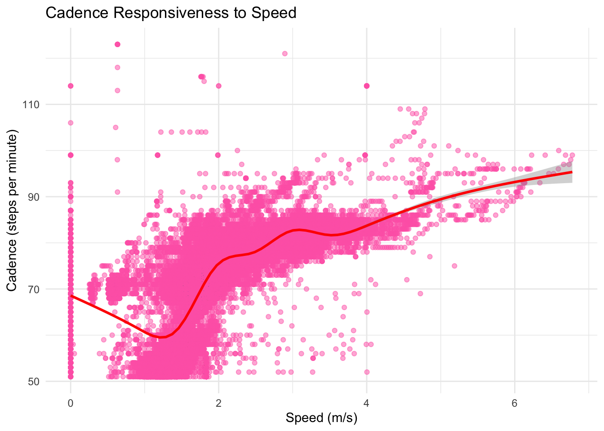
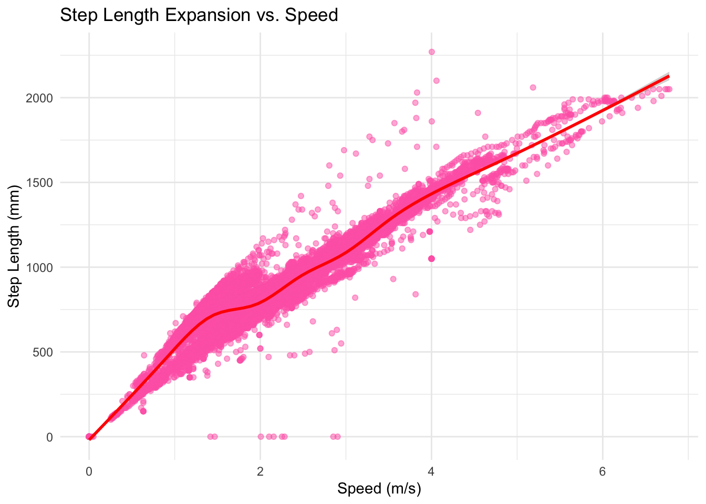
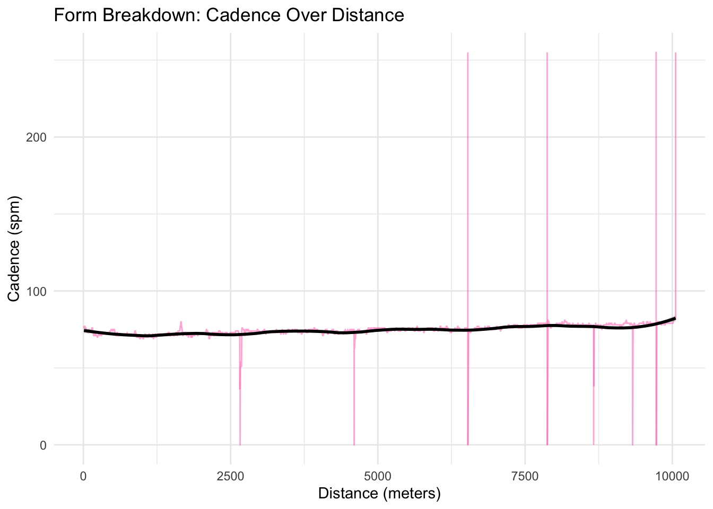
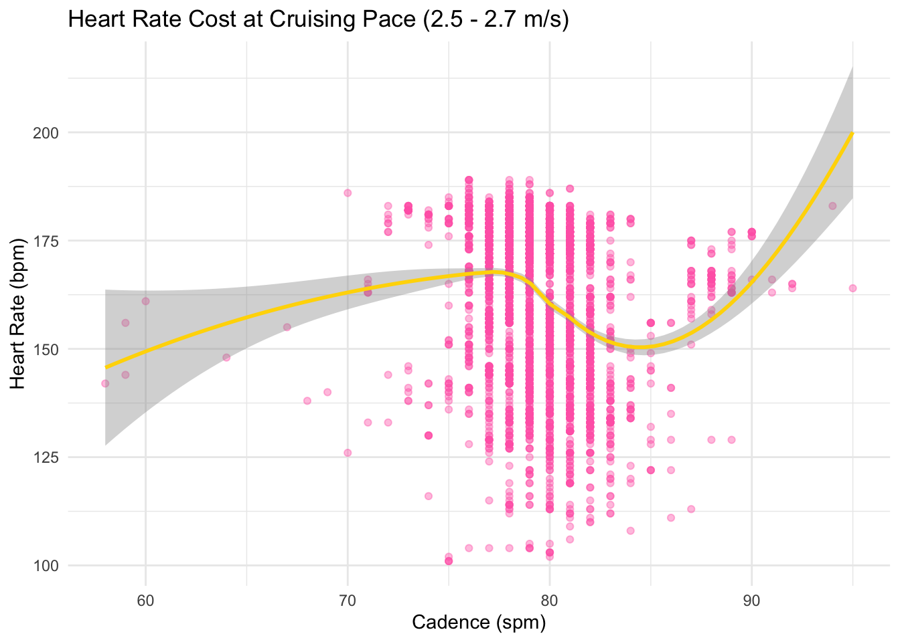
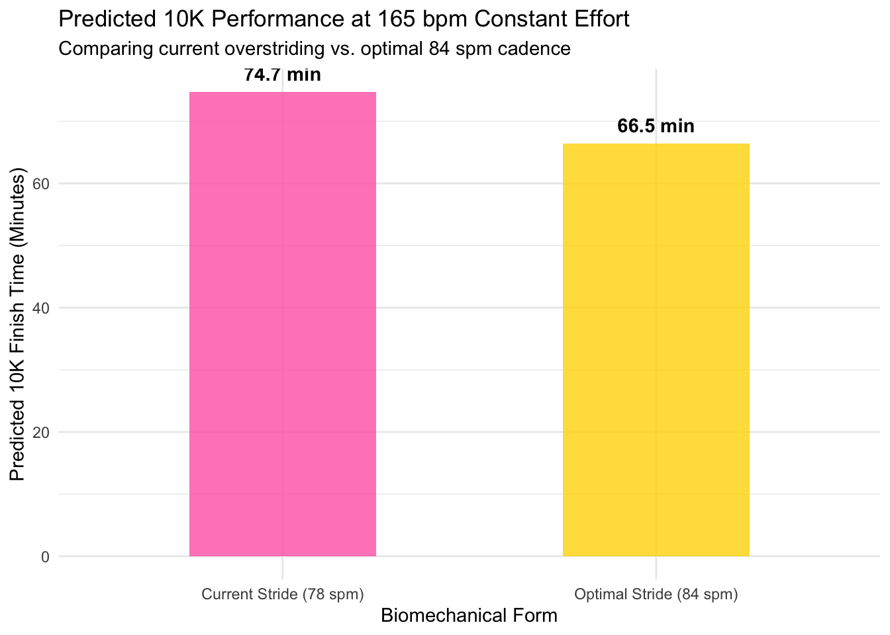
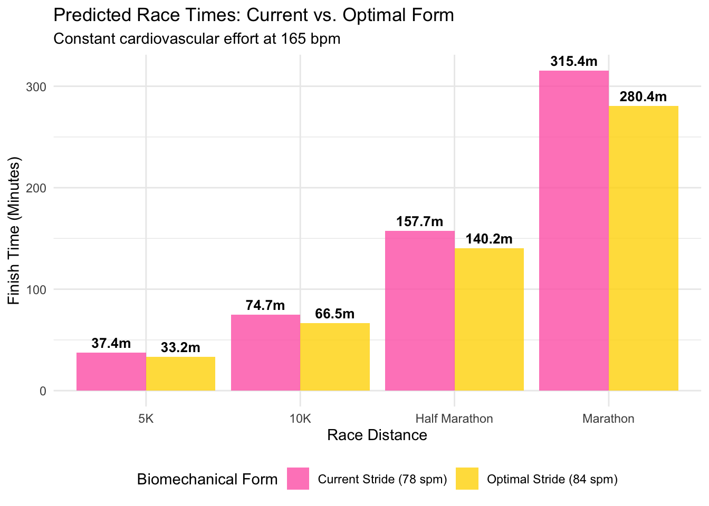

Personal Visualization Journey
Library Used
Data Import & Cleaning
Code
fit_files <- list.files('data/raw/personalVizJourney_Coros', pattern = "\\.fit$", full.names = TRUE)
read_fit_records <- function(file_path) {
fit_data <- readFitFile(file_path)
df <- records(fit_data)
if (is.list(df) & !is.data.frame(df)) {
df <- bind_rows(df)}
df <- df %>% mutate(source_file = basename(file_path))
return(df)}
combined_df <- fit_files %>%
map(read_fit_records) %>%
bind_rows()
corosData <- combined_df
print(corosData)# A tibble: 238,530 × 17
timestamp position_lat position_long distance heart_rate altitude
<dttm> <dbl> <dbl> <dbl> <int> <dbl>
1 2023-06-27 11:49:34 11.5 105. 0 87 23
2 2023-06-27 11:49:37 11.5 105. 4 92 23
3 2023-06-27 11:49:38 11.5 105. 8 93 23
4 2023-06-27 11:49:39 11.5 105. 9 94 23
5 2023-06-27 11:49:40 11.5 105. 10 95 23
6 2023-06-27 11:49:41 11.5 105. 12.5 96 23
7 2023-06-27 11:49:42 11.5 105. 15 96 23
8 2023-06-27 11:49:43 11.5 105. 16 97 23
9 2023-06-27 11:49:44 11.5 105. 17 98 23
10 2023-06-27 11:49:45 11.5 105. 19 98 23
# ℹ 238,520 more rows
# ℹ 11 more variables: speed <dbl>, activity_type <chr>, `Effort Pace` <dbl>,
# cadence <int>, power <int>, accumulated_power <dbl>, step_length <dbl>,
# source_file <chr>, stance_time <dbl>, vertical_oscillation <dbl>,
# vertical_ratio <dbl>Initial Viz
# A tibble: 238,530 × 17
timestamp position_lat position_long distance heart_rate altitude
<dttm> <dbl> <dbl> <dbl> <int> <dbl>
1 2023-06-27 11:49:34 11.5 105. 0 87 23
2 2023-06-27 11:49:37 11.5 105. 4 92 23
3 2023-06-27 11:49:38 11.5 105. 8 93 23
4 2023-06-27 11:49:39 11.5 105. 9 94 23
5 2023-06-27 11:49:40 11.5 105. 10 95 23
6 2023-06-27 11:49:41 11.5 105. 12.5 96 23
7 2023-06-27 11:49:42 11.5 105. 15 96 23
8 2023-06-27 11:49:43 11.5 105. 16 97 23
9 2023-06-27 11:49:44 11.5 105. 17 98 23
10 2023-06-27 11:49:45 11.5 105. 19 98 23
# ℹ 238,520 more rows
# ℹ 11 more variables: speed <dbl>, activity_type <chr>, `Effort Pace` <dbl>,
# cadence <int>, power <int>, accumulated_power <dbl>, step_length <dbl>,
# source_file <chr>, stance_time <dbl>, vertical_oscillation <dbl>,
# vertical_ratio <dbl>tibble [238,530 × 17] (S3: tbl_df/tbl/data.frame)
$ timestamp : POSIXct[1:238530], format: "2023-06-27 11:49:34" "2023-06-27 11:49:37" ...
$ position_lat : num [1:238530] 11.5 11.5 11.5 11.5 11.5 ...
$ position_long : num [1:238530] 105 105 105 105 105 ...
$ distance : num [1:238530] 0 4 8 9 10 12.5 15 16 17 19 ...
$ heart_rate : int [1:238530] 87 92 93 94 95 96 96 97 98 98 ...
$ altitude : num [1:238530] 23 23 23 23 23 23 23 23 23 23 ...
$ speed : num [1:238530] 2.61 2.6 2.6 2.59 2.59 ...
$ activity_type : chr [1:238530] "running" "running" "running" "running" ...
$ Effort Pace : num [1:238530] 2.61 2.6 2.6 2.59 2.59 ...
$ cadence : int [1:238530] NA 79 79 78 78 78 78 78 78 77 ...
$ power : int [1:238530] NA 172 172 171 171 170 170 169 169 168 ...
$ accumulated_power : num [1:238530] NA 172 344 515 686 ...
$ step_length : num [1:238530] NA 980 990 990 990 980 980 980 980 980 ...
$ source_file : chr [1:238530] "453083700043743232.fit" "453083700043743232.fit" "453083700043743232.fit" "453083700043743232.fit" ...
$ stance_time : num [1:238530] NA NA NA NA NA NA NA NA NA NA ...
$ vertical_oscillation: num [1:238530] NA NA NA NA NA NA NA NA NA NA ...
$ vertical_ratio : num [1:238530] NA NA NA NA NA NA NA NA NA NA ...The data initially looks sparse, but if there’s anything that I learned from working with data is that the simplest most mundane looking of numbers will always have underlying information and context that we can extract!
My research question or goals for now will be: How can I improve my athletic abilities overall!
Exploring Running Form
Optimizing Stride Length 1
Code
run_data <- corosData %>%
filter(activity_type == "running", !is.na(cadence), cadence > 50) %>%
filter(speed < 20) # this is to remove one single outlier where I was running for 60m/s???
ggplot(run_data, aes(x = speed, y = cadence)) +
geom_point(alpha = 0.5, color = "hotpink") +
geom_smooth(method = "gam", color = "red") +
labs(
title = "Cadence Responsiveness to Speed",
x = "Speed (m/s)",
y = "Cadence (steps per minute)") +
theme_minimal()
[1] 0.6533123It looks like I might be overstriding in most of my runs, that’s because in this plot I should be expecting a simple straight line, that means that my cadence is not changing regardless of how fast I am going, or slight upward but not this positive. Therefore, meaning the faster I am going to longer my legs are reaching ahead of me, meaning I am heel striking more, less efficiency of energy.
Optimizing Stride Length 2
Code

[1] 0.9383257Here I should be expecting less of a positive upward trend, but I do see that in which I just described indicating the opposite of a preferable running form. The correlation is very high in this which makes sense, since the faster I go the more step length I should be makign to compensate for the a cosntant candence, but there’s so much outliers as well, meaning that my step length increases dramatically at higher speeds while my cadence stays flat, so I am likely reaching too far forward.
Optimizing Stride Length 3
Code
clean_corosData <- corosData %>%
filter(cadence > 40 & cadence < 120) # cleaning the data for any sensor artifacts
single_run <- corosData %>%
filter(source_file == "453108319870025728.fit")
ggplot(single_run, aes(x = distance, y = cadence)) +
geom_line(color = "hotpink", alpha = 0.5) +
geom_smooth(method = "loess", color = "black", span = 0.2) +
labs(
title = "Form Breakdown: Cadence Over Distance",
x = "Distance (meters)",
y = "Cadence (spm)") +
theme_minimal()
I have used data for my 10KM run in which the black lines shows a consistent cadence (remarkably I must say) across the whole distance. It is hovering between 70 - 80 steps per minutes (spm) which mean my actual cadence is around 140 - 160 spm since the sensor on my watch only measures for one single foot.
Synthesis of Data
To put into perspective, my running form is quite bad since a cadence of 140 - 160 spm is on the lower end, with me being on the leaner and longer side of runners, meaning that I am generating my speed not through leg turnover, but through overstriding; reaching far too ahead, and “breaking” heel striking as an output.
Therefore next steps to understand how to improve my running form (finding the optimal form) is to analyze Vertical Oscillation vs. Speed, checking my stance time (ground contact time) then ultimately mappiung my Form to Physiological Cost. However I don’t have any data on these measures, so then we will just skip it.
Map Form to Physiological Cost (The Efficiency Sweet Spot)
Code
efficiency_check <- run_data %>%
filter(speed >= 2.5 & speed <= 2.7) %>%
filter(heart_rate > 100)
ggplot(efficiency_check, aes(x = cadence, y = heart_rate)) +
geom_point(alpha = 0.4, color = "hotpink") +
geom_smooth(method = "loess", color = "gold") +
labs(
title = "Heart Rate Cost at Cruising Pace (2.5 - 2.7 m/s)",
x = "Cadence (spm)",
y = "Heart Rate (bpm)") +
theme_minimal()
The plot confirms the overstriding hypothesis. By taking longer, slower steps (75-80 spm), I am braking slightly with each foot strike, forcing my heart to work more to simply keep the momentum. However if I consciously shorten my stride and increase my cadence by just 5 to 8 steps per minute (aiming for that 84 spm dip), I would be able to run at the exact same speed but at a significantly lower, more sustainable heart rate.
Knowing that I could improve my running form and make better use of power efficiency, let’s see the magnitude of this and how much I am able to save by improving my running form.
Forecasting the difference in current running form and optimal running form
Model Fitting and Plotting
Code
pace_model <- lm(speed ~ heart_rate + cadence, data = clean_corosData)
scenarios <- data.frame(
form_profile = c("Current Stride (78 spm)", "Optimal Stride (84 spm)"),
heart_rate = c(165, 165),
cadence = c(78, 84))
performance_prediction <- scenarios %>%
mutate(
predicted_speed_ms = predict(pace_model, newdata = scenarios),
finish_time_minutes = (10000 / predicted_speed_ms) / 60)
ggplot(performance_prediction, aes(x = form_profile, y = finish_time_minutes, fill = form_profile)) +
geom_col(width = 0.5, alpha = 0.8) +
geom_text(
aes(label = paste0(round(finish_time_minutes, 1), " min")),
vjust = -0.8,
fontface = "bold") +
scale_fill_manual(values = c("Current Stride (78 spm)" = "hotpink", "Optimal Stride (84 spm)" = "gold")) +
labs(
title = "Predicted 10K Performance at 165 bpm Constant Effort",
subtitle = "Comparing current overstriding vs. optimal 84 spm cadence",
x = "Biomechanical Form",
y = "Predicted 10K Finish Time (Minutes)") +
theme_minimal() +
theme(legend.position = "none")
Summary of the model
Call:
lm(formula = speed ~ heart_rate + cadence, data = clean_corosData)
Residuals:
Min 1Q Median 3Q Max
-3.9492 -0.1863 -0.0225 0.1878 5.7921
Coefficients:
Estimate Std. Error t value Pr(>|t|)
(Intercept) -1.1086640 0.0144696 -76.62 <2e-16 ***
heart_rate -0.0016826 0.0000850 -19.80 <2e-16 ***
cadence 0.0463597 0.0001691 274.07 <2e-16 ***
---
Signif. codes: 0 '***' 0.001 '**' 0.01 '*' 0.05 '.' 0.1 ' ' 1
Residual standard error: 0.4487 on 90130 degrees of freedom
(266 observations deleted due to missingness)
Multiple R-squared: 0.4782, Adjusted R-squared: 0.4782
F-statistic: 4.13e+04 on 2 and 90130 DF, p-value: < 2.2e-16The regression model mathematically proves that correcting my overstride will make me faster without requiring extra effort, explaining nearly 48% of the variance in my pacing (other var could be elevation gain, the temperature, baseline energy etc.,). Specifically, the data shows that for every additional step per minute I take, my speed increases by 0.046 meters per second while holding my heart rate constant. Conversely, the slightly negative heart rate coefficient captures cardiovascular drift, showing that as I fatigue, my heart works harder to maintain a slower pace. By shifting my cadence from 78 spm to the optimal 84 spm, I gain about 0.28 meters per second in “free speed” simply by eliminating the braking forces of my current stride.
Sanity Check - Running an ANOVA
Code
anova_data <- clean_corosData %>%
mutate(
cadence_group = case_when(
cadence >= 76 & cadence <= 80 ~ "Current Stride (78 zone)",
cadence >= 82 & cadence <= 86 ~ "Optimal Stride (84 zone)",
TRUE ~ NA_character_)) %>%
filter(!is.na(cadence_group))
cadence_anova <- aov(speed ~ cadence_group, data = anova_data)
summary(cadence_anova) Df Sum Sq Mean Sq F value Pr(>F)
cadence_group 1 2019 2018.7 9816 <2e-16 ***
Residuals 30805 6336 0.2
---
Signif. codes: 0 '***' 0.001 '**' 0.01 '*' 0.05 '.' 0.1 ' ' 1Correcting my cadence will fix my running form, and 100% makes me significantly faster.
Predicting Running Time
Model Fitting and Prediction plots
Code
race_scenarios <- data.frame(
race = factor(
rep(c("5K", "10K", "Half Marathon", "Marathon"), each = 2),
levels = c("5K", "10K", "Half Marathon", "Marathon")),
distance_m = rep(c(5000, 10000, 21097.5, 42195), each = 2),
form_profile = rep(c("Current Stride (78 spm)", "Optimal Stride (84 spm)"), 4),
heart_rate = 165,
cadence = rep(c(78, 84), 4))
race_predictions <- race_scenarios %>%
mutate(
predicted_speed_ms = predict(pace_model, newdata = .),
finish_time_minutes = (distance_m / predicted_speed_ms) / 60)
ggplot(race_predictions, aes(x = race, y = finish_time_minutes, fill = form_profile)) +
geom_col(position = "dodge", alpha = 0.8) +
geom_text(
aes(label = paste0(round(finish_time_minutes, 1), "m")),
position = position_dodge(width = 0.9),
vjust = -0.5,
size = 3.5,
fontface = "bold") +
scale_fill_manual(
values = c("Current Stride (78 spm)" = "hotpink", "Optimal Stride (84 spm)" = "gold")) +
labs(
title = "Predicted Race Times: Current vs. Optimal Form",
subtitle = "Constant cardiovascular effort at 165 bpm",
x = "Race Distance",
y = "Finish Time (Minutes)",
fill = "Biomechanical Form") +
theme_minimal() +
theme(legend.position = "bottom")